Châteauform', la marque qui révèle les talents
Secteurs
- Corporate
Savoir-faire
- Stratégie de marque et conseil
Repositionner le leader des évènements d'entreprise
Challenge
Faire de Châteauform’ le leader d’opinion des entreprises humanistes.
Châteauform’ s’est construite autour d’une valeur centrale : l’humain, qu’elle met au centre de toutes ses préoccupations, et décisions.
Elle clame depuis ses débuts il y a 25 ans que « des talents heureux font des clients heureux » . Celle valeur forte, la rendait à nos yeux, parfaitement légitime, pour se positionner comme une entreprise humaniste.
Stratégie & Creative Idea
Châteauform’ : révélons vos talents.
La nouvelle plateforme de communication repose sur un élément clé de la culture d’entreprise de Châteauform’ : le Talent. Un terme préempté par Châteauform’ depuis ses débuts et donc parfaitement légitime.
Tout le concept repose sur cette analogie, cette double lecture du talent : le talent en nous et celui qui travaille avec nous.
Contexte client
Opérer un re-positionnement et asseoir sa notoriété
Dans ce contexte mouvant, Châteauform’, partenaire privilégié des entreprises dans l’organisation de leurs événements, se devait de prendre la parole afin de conserver sa place de leader européen. Pour se faire, un re-positionnement était nécessaire pour être davantage en phase avec les attentes du marché. L’objectif : sortir de la simple organisation de séminaires pour aller bien au-delà.
État des lieux
Une organisation du travail qui se réinvente et rebat les cartes
La crise sanitaire, les confinements à répétition et l’avènement du télétravail ont fondamentalement changé la donne en termes d’organisation du travail. Les entreprises ont davantage besoin de réunir leurs équipes, de donner du sens à leurs actions et de valoriser leurs collaborateurs. Dans ce contexte, de nombreux concurrents à la communication agressive ont envahit le secteur des événements d’entreprises, offrant flexibilité aux organisateurs et promesse de bien-être aux participants.
Notre accompagnement
Accompagnement annuel : stratégie de marque et de communication
Identifier les prises de parole stratégiques et animer le plan de communication en lien avec la plateforme de communication.
A travers une veille concurrentielle et une analyse de l’environnement nous avons pu identifier les signaux forts du marché et s’y intégrer.
Lancement et réalisation d’une nouvelle plateforme de communication et signature de marque
Réalisation d’une plateforme de communication sur 3 ans basée sur le talent et écriture d’une signature de marque « révélons vos talents » accompagnée d’une stratégie de communication et de contenus pour orchestrer le lancement de la campagne.
Stratégie de brand content autour de la plateforme de communication
Conception et réalisation de contenus permettant de nourrir la plateforme de marque « révélons vos talents » et de la faire vivre tout au long de l’année.
Conception et création d’une plateforme digitale permettant de regrouper les contenus réalisés dans le cadre de la campagne
Notre approche méthodologique
En immersion
Deux jours passés chez Châteauform’ pour comprendre sa « chaleur ajoutée »
Comment parler d’une marque ou d’un produit sans l’avoir testé, et approuvé ?
Pour comprendre la marque et pour pouvoir en parler, nous sommes allés sur le terrain pour tester les offres « au vert » et « en ville » de Châteauform’.
La meilleure manière qui soit, pour nos équipes stratégie et création de capter tout ce qui fait la marque aujourd’hui : sa culture, ses services, son vocabulaire et tous ses petits plus qui la différencient.
Workshops
Des ateliers thématiques pour aligner vision et objectifs.
Hiérarchiser les offres et comprendre les enjeux business, définir et comprendre les cibles, fixer les grands objectifs de communication, mais aussi se nourrir d’anecdotes que seul un cadre extérieur permet de livrer. Nous avons pensé et animer des ateliers thématiques pendant 2 jours, dans le cadre Châteauform’, pour aligner vision et objectifs.
Co-construction
Du plan de communication au plan média
Cette immersion et ces workshops nous ont permis de co-construire un plan de communication et une plan média (en collaboration avec l’agence média du Groupe, 10h10) afin de concevoir une campagne de communication pensée au global, efficace et mettant en valeur la création.
Identifier les signaux forts de la marque
Une culture d'entreprise vivante
Forte, vivante, incarnée par vous et basée sur des valeurs partagées par tous, il est temps de la partager !
Un vocabulaire identitaire
Une façon de dire les choses « propriétaire » voire particulière , où chaque mot est pensé, où les doubles sens sont communs et où l’amour des mots se ressent.
Un art de vivre chaleureux
Et de bien recevoir. De bien manger, de mettre à l’aise, de prendre soin, toujours avec la bonne mesure pour faire en sorte que les invités se sentent « comme à la maison »
Des Talents heureux
Investis, dynamiques, chaleureux, dotés d’un fort esprit d’équipe : la force vive de Châteauform’ dont le management doit devenir un cas d’école.
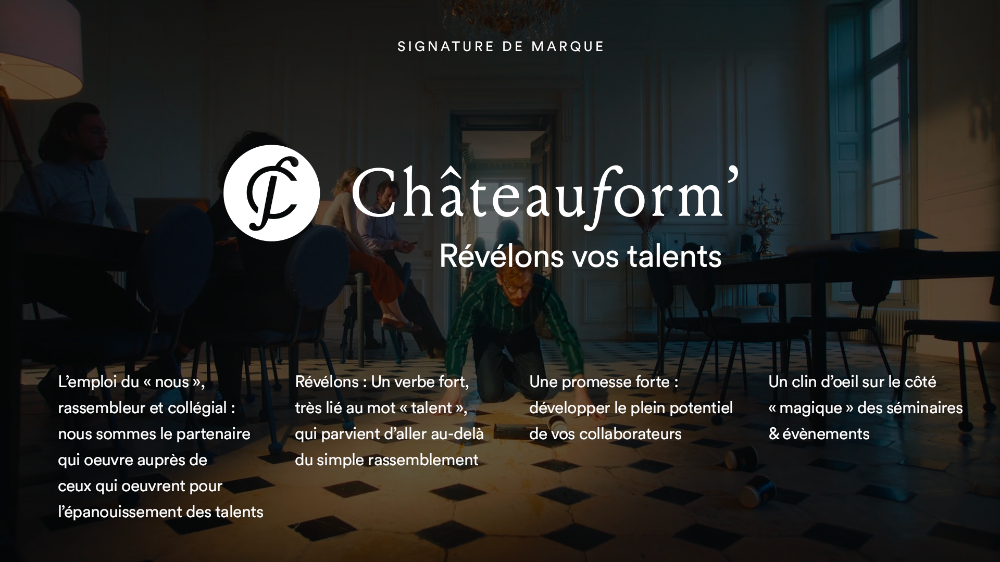
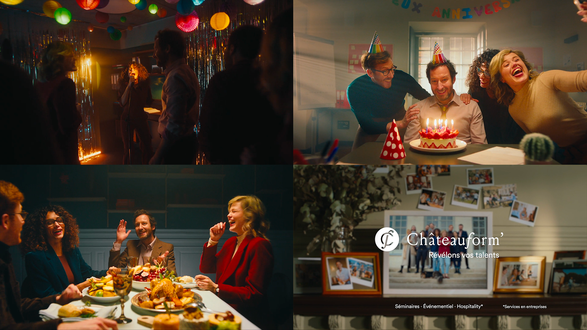
Un film, écrit comme un manifeste, repose sur différents niveaux de lecture
« Le talent » un mot devenu un véritable élément de langage du secteur.
Tout le concept repose sur cette analogie, cette double lecture du talent : celui qui travaille avec nous et celui que nous avons en nous.
Un film chaleureux, en rupture avec les codes du corporate
Un film en rupture avec les codes souvent froids et formels du secteur. Une manière originale d’incarner la « chaleur ajoutée » chère à Châteauform’, le tout porté par une direction artistiques chaleureuse, une réalisation organique et une composition musicale réalisée pour l’occasion, contemporaine et rythmée.
Direction artistique
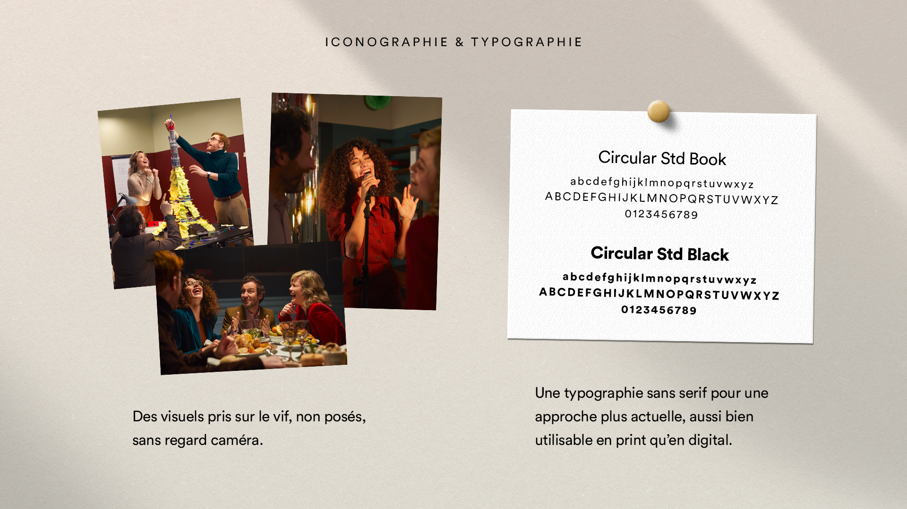
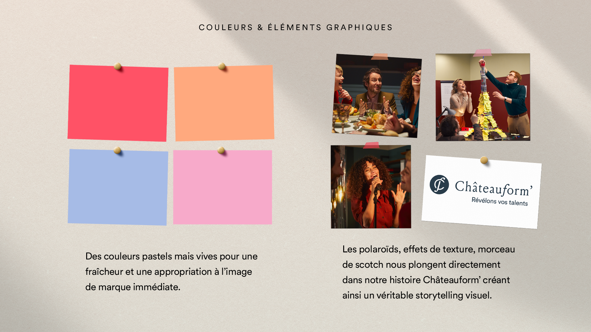
Campagne print
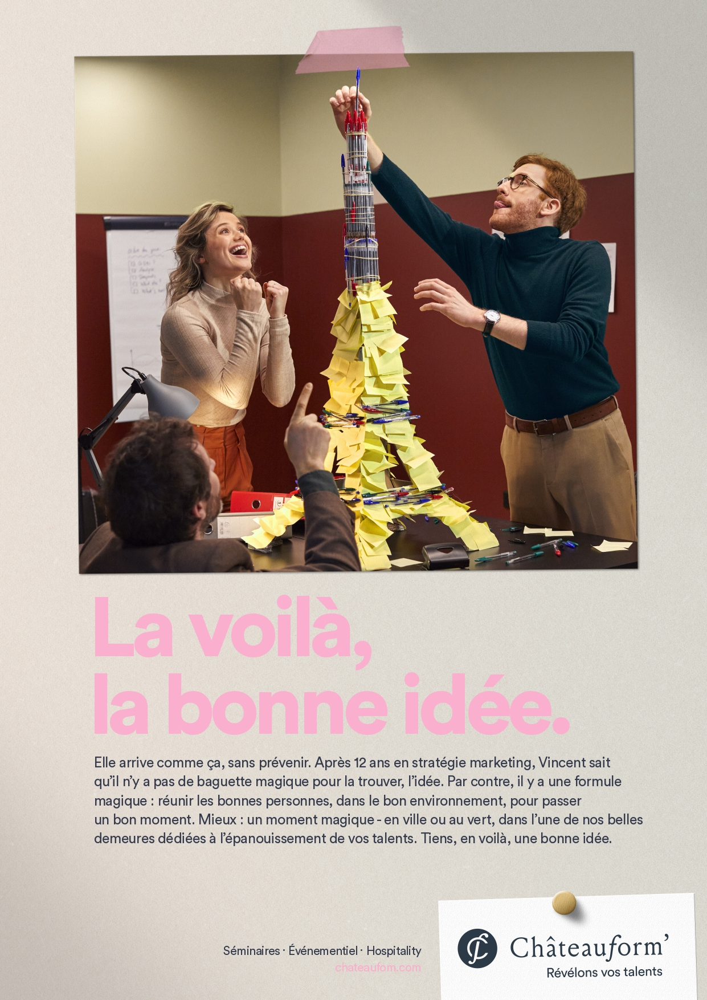
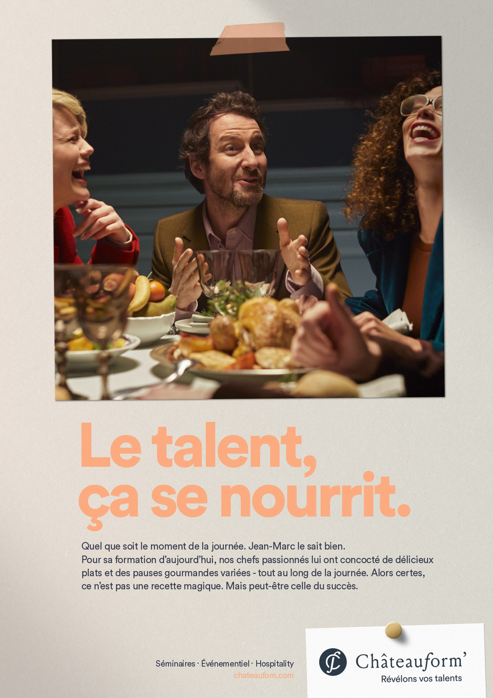
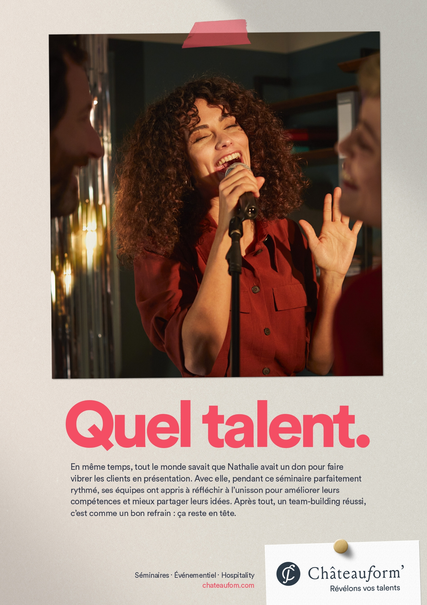
Stratégie des moyens
Un “mix-media” intelligent et inédit en TV, social media, et display.
Réalisé en collaboration avec l’agence 10h10 de ekstend Group, la campagne a été échelonnée sur deux mois à partir du 1er février 2022. Elle est axée sur l’humain et mettra en avant l’épanouissement des collaborateurs ; cette prise de parole nationale se matérialisera par l’intermédiaire d’un “mix-media” intelligent et inédit en TV, social media, et display.
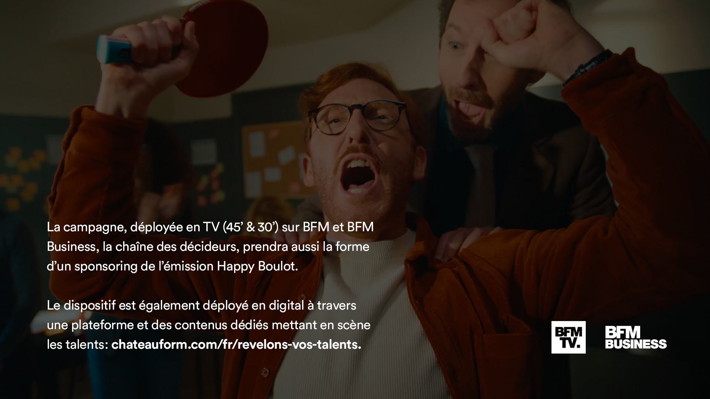
Dispositif média
TV : film 45’ et 30’, billboard 8’
Une présence sur BMF et BFM Business, la chaîne des décideurs et dirigeants d’entreprise et un sponsoring de l’émission Happy Boulot
Digital : vidéo, brand content, social média
Campagne digitale avec diffusion des vidéos au format 15’ sur Linkedin avec un cible RH & Managers ainsi que via la plateforme Gravity.
Réalisation d’une stratégie de contenus et création de contenus.
Print : présence dans la presse professionnelle
Des parutions dans la presse professionnelle à destination des organisateurs d’événements d’entreprise : trend book 2022.
Billboard 8"
Partenariat Happy Boulot
Assets Social Media
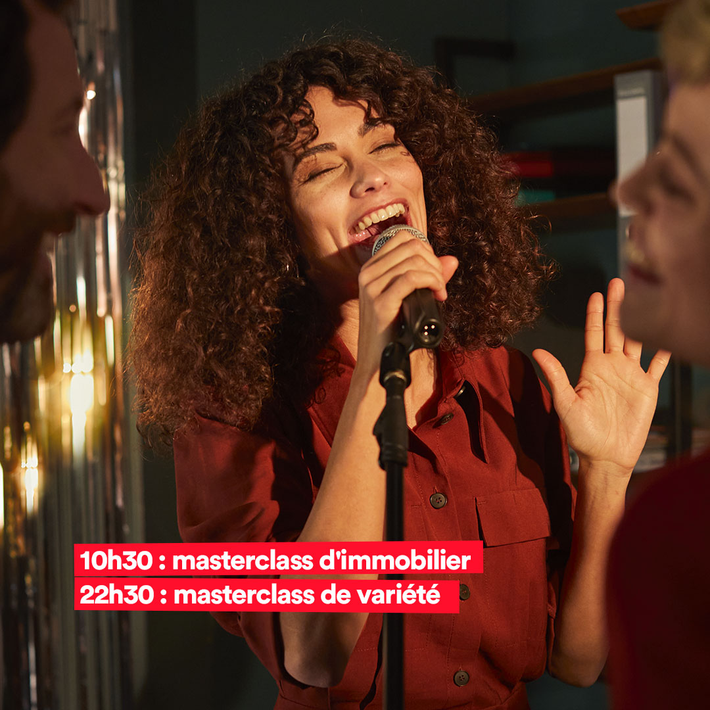
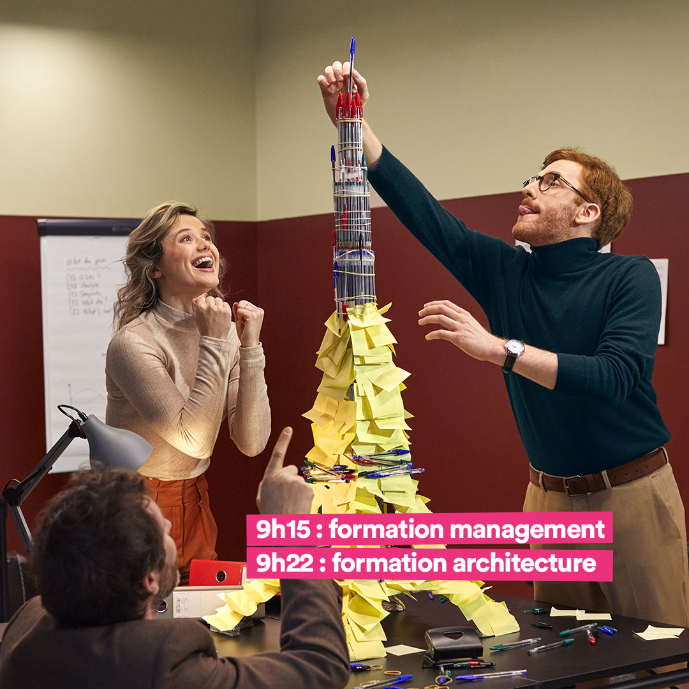
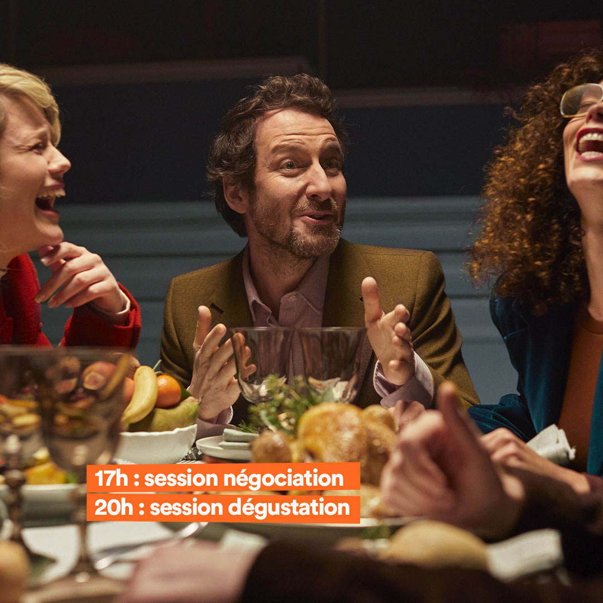
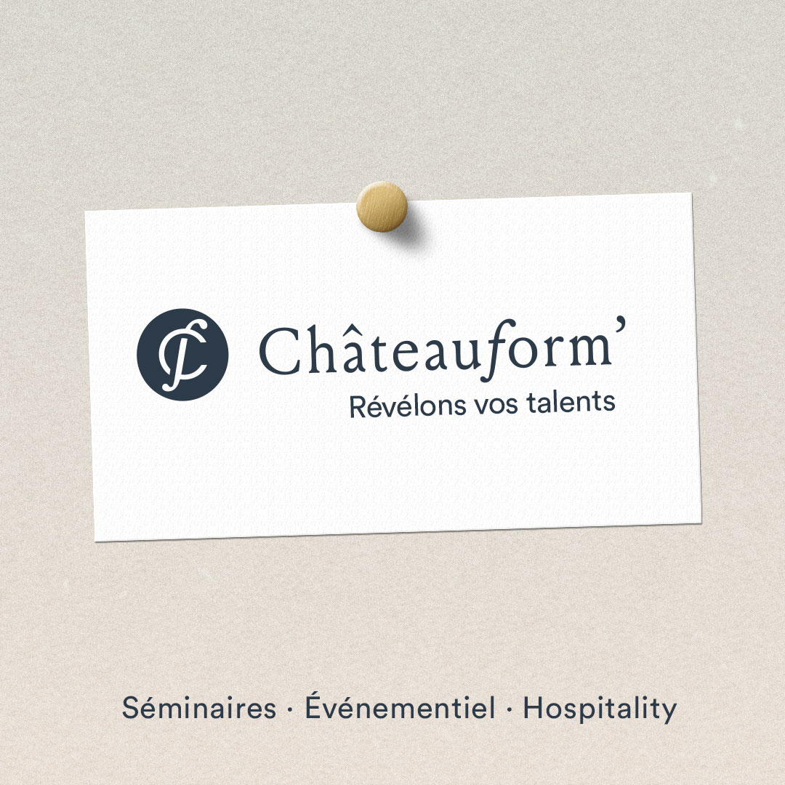
Brand content
Podcast
Alors qu’ils viennent tout juste de dévoiler leur nouvelle signature de marque “révélons vos talents”, Daniel et Benjamin Abittan, le duo père-fils à la tête de cette entreprise familiale nous parle de la place accordée à l’humain et aux talents au sein de Châteauform’ »
Interview vidéo
Entretien avec Magaly Gaudin, responsable Richesses Humaines et Talents & culture chez Châteauform’.
« Notre vraie richesse ce sont nos talents. Des talents que nous avons coeur de voir évoluer, grandir, s’épanouir. Chez Châteauform’ nous mettons tous les moyens à leur disposition, pour qu’ils puissent se révéler, à nos côtés. »
Behind the scenes
Réalisation d’un behind the scene diffusé sur les réseaux sociaux de Châteauform’
Plateforme digitale